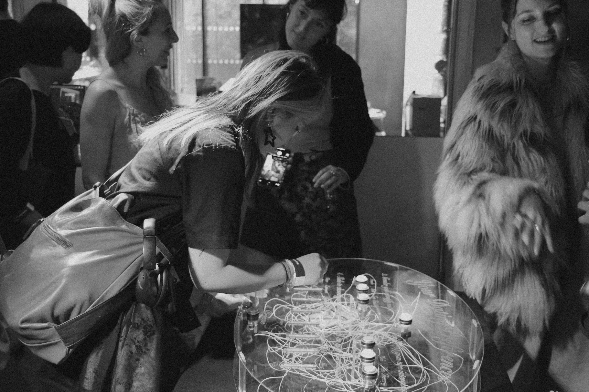
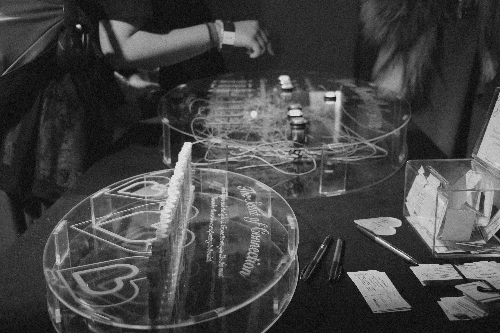
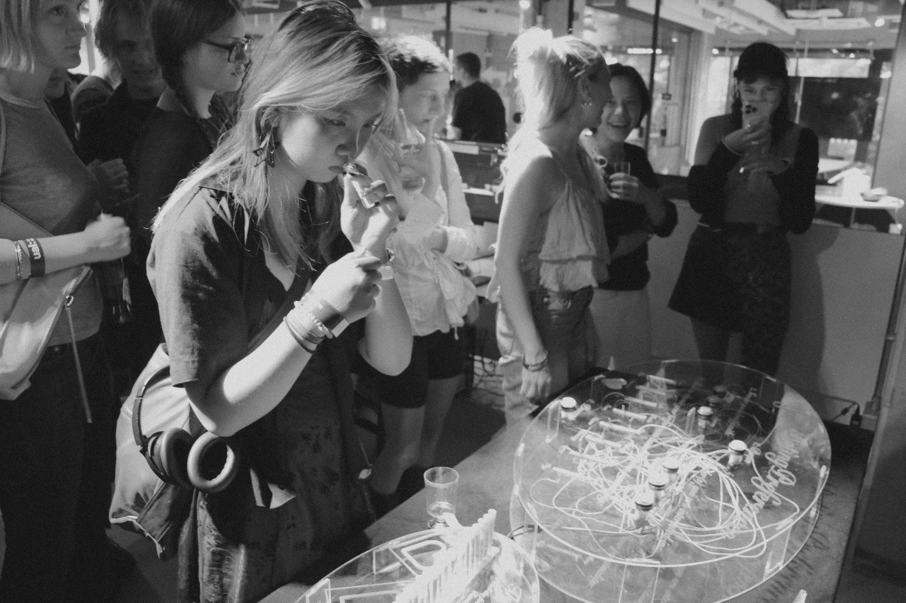
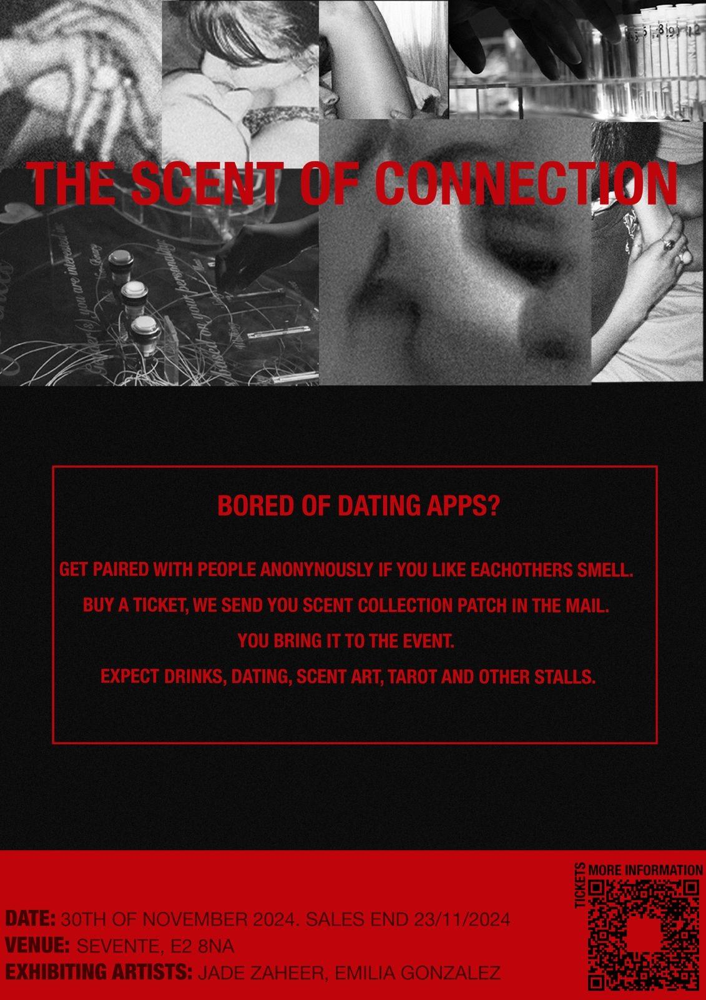

The Scent of Connection




The Scent of Connection is a Computational Smell Dating project created alongside Nicole Alonso, Porsha Thompson, and Jack Jesse. Our Website can be found here.
The Scent of Connection is a critique on modern dating culture, specifically our generations reliance on dating apps and subsequently choosing people solely based on one sense, sight. We wanted to explore dating and connectivity through smell, allowing users to find connection in a more instinctual way. The piece encourages the user to enter information about their dating preferences and will then process the information and give the user five smells to choose from. Each vial contains a unique smell sample from an individual. The user then choses the scent they are most attracted to and can leave their contact information if they wish to be connected to the owner of the scent. We have exhibited at the Hub, Peckham as part of the CCI Festival in July 2024.We also exhibited as part of Something 2 Chew on's 'Sensation Exhibition'. at Hackney Baths in November 2024.
We are hosting an in person dating event at Sevente on the 30th November, 2024.